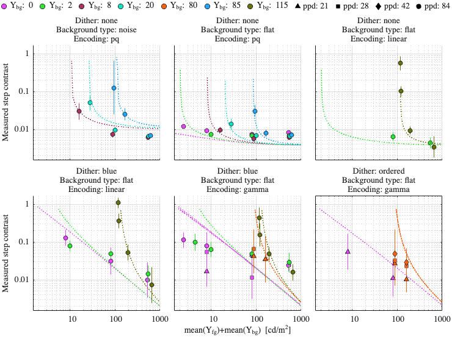
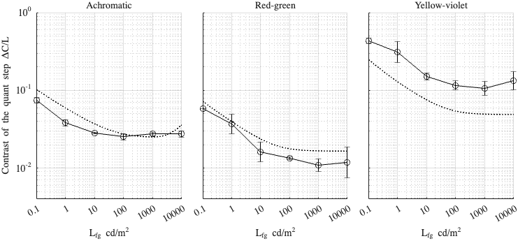

Fitting config: dither, model: daly_masking_freq_pool
Fitting error (RMSE): 2.36149
Model parameters
p.beta = 1.05505; p.beta_cc = 1; p.gs_num = [ 0.454304 0.2 0.985972 ]; p.noise_params = [ 0.8318 0.52157 0.4868 0.697027 ]; p.dither_mask_params = [ 0.0032074 1.03506 1.00022 ]; p.blue_dither_params = [ 32.7201 213.348 2.58229 2.38955 ];
Dataset: [ar2025]
Scaling factor: 0.33732

Dataset: [kim2020]
Scaling factor: 1.14454
